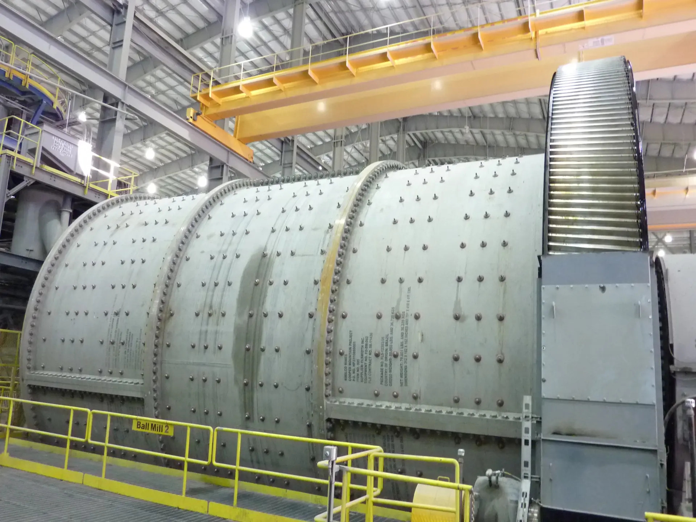
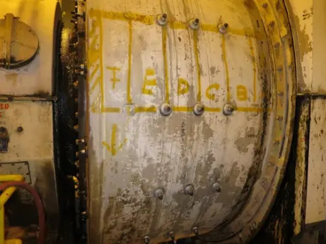
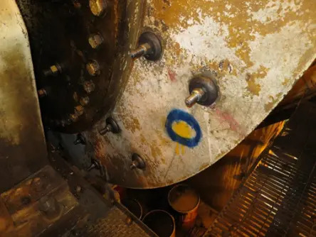

C‑PAM delivers advanced nondestructive testing and asset integrity services designed to reduce operational risk and extend equipment life. Using industry‑leading inspection technology and certified techniques, we help organizations identify defects early, prevent unplanned downtime, and maintain safe, reliable operations. Our team supports clients across industrial, manufacturing, and energy sectors with precise reporting, fast turnaround, and a commitment to world‑class service.
Explore examples of our inspection, testing, and asset integrity services in action. This gallery highlights field operations, equipment, and technical work performed by our team across various industries.




